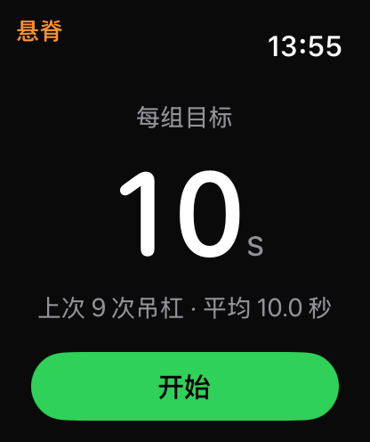
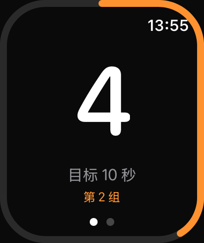
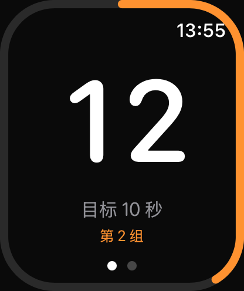
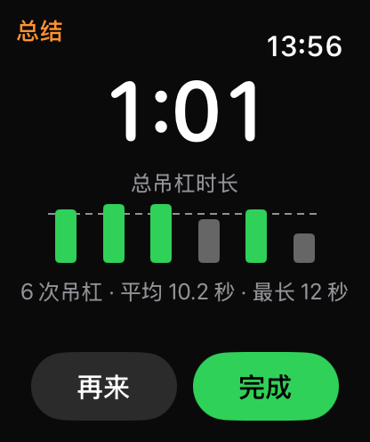
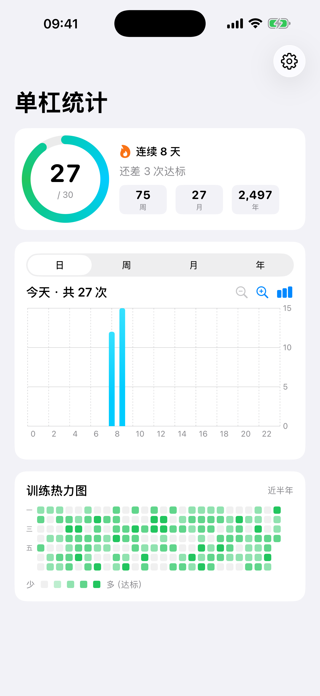
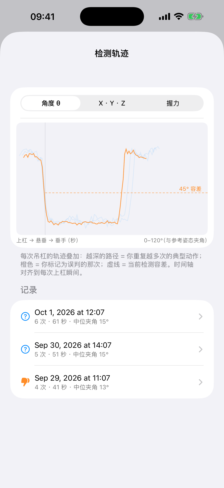
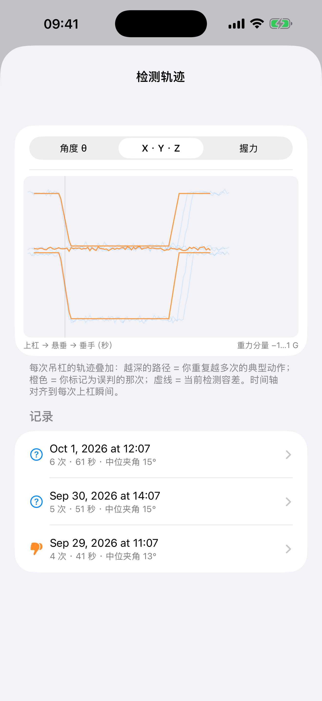
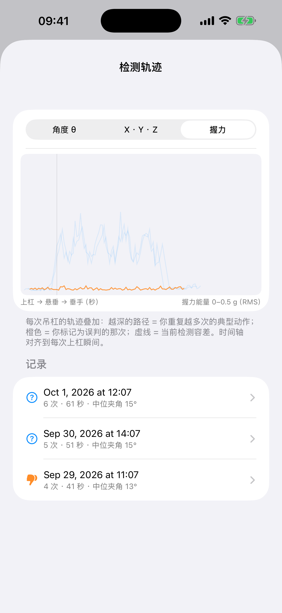

吊单杠，从未如此没有负担。手表自动识别你的悬垂：手抬起来，计数开始；手放下来，自动暂停。不用摸索，不用点按——吊完手再麻，也不需要碰任何按钮。
下载 HangSpine App Store · 一次性买断，无订阅已登陆 TestFlight 内测 · App Store 即将上线
功能越简单，越容易使用；越容易使用，越容易坚持。HangSpine 的整个设计只围绕一件事：让你把注意力放在训练本身，而不是 App 上。

开始页面只有今日进度和一枚开始按钮。训练前的最后 3 秒不该用来找功能——tap 开始，3-2-1 倒计时后直接上杠。

手表的陀螺仪持续感知你的手腕姿态：手举过头顶进入悬垂，倒计时自动开始；撑不住放下来，训练自动暂停。一次自然的吊杠就是一条完整的记录——悬垂中双手抓着杠，你没有任何空余的手指去点屏幕，我们也不需要你有。

每坚持满 10 秒（可调 10/12/15 秒）记为一次，手表轻震确认，圆环走满、亮起绿色。悬垂是和时间对抗的运动——把长目标切成 10 秒的小胜利，坚持的心理成本直线下降。

结束即出总结：总次数、总时长、每一组的明细。想连着练？"再来"一键回到倒计时。没有账单式的复杂报表——练完就看，看完就走。

手机端的首页只有一屏：今日目标圆环、连续打卡火焰、周/月/年趋势和半年热力图。统计不是给你研究的数据面板，而是把"我坚持了多久"变成一眼可见的成就感——很多人是舍不得断掉那团火焰才每天都挂一会儿的。
每个人的身高、臂展、单杠环境都不一样，固定的阈值不可能适合所有人。HangSpine 记录每次训练的完整动作轨迹，在设备本地持续学习你的上杠与放下特征——练得越多，识别越准。
每次训练的腕部轨迹（角度、三轴重力、握力能量）以 2.5Hz 完整留存，随时回看"传感器看到了什么"。
这次识别准了？点个赞。误判了？点踩。两个按钮，一秒完成——你的反馈就是最好的训练数据。
检测参数定期在本地重算，逐渐贴合你的专属动作模式。所有学习都在设备上完成，绝不上传云端训练。

每次吊杠的轨迹叠加成云团——颜色越深的路径，就是你重复最多的标准动作；虚线是当前检测容差。

三轴重力分量实时翻转的过程，就是"抬手抓杠"这个动作本身。物理信号不会说谎。

真正承重时前臂的生理震颤（8–12Hz）会顶起握力能量曲线——空手举臂模仿不了这个信号。
市面上的健康 App 只能让你看着视频模仿：做没做对、幅度够不够，它不知道，你也不知道。HangSpine 的方向恰恰相反——用 Apple Watch 的三轴重力感应，获取你在物理世界里真实发生的动作，1:1 判断是否标准。悬垂计数，只是这套能力的第一个应用。
脊柱节段活动 · 呼吸配合
核心稳定 · 屈伸控制
交叉协调 · 肩带稳定
对侧伸展 · 腰椎稳定
首批预设动作即将随下个版本推出，此后会持续更新动作库，并计划支持录入你自己喜欢的训练动作（如普拉提、脊柱康复方向的练习）。
"能坚持下来的训练，才是有效的训练。"
所以 HangSpine 从第一天起就拒绝复杂：没有账号，没有社交，没有订阅——抬手就练，放下就停。